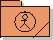

Artifacts >
Artifacts >
 Business Modeling Artifact Set >
Business Modeling Artifact Set >
 Business Object Model... >
Organization Unit >
Business Object Model... >
Organization Unit >
 Guidelines
Guidelines
Artifacts >
Business Modeling Artifact Set >
Business Object Model... >
Organization Unit >
Guidelines
Guidelines:
|
 Organization Unit |
An organization unit encloses business workers, business entities, and other organization units that, according to some criterion, belong together. An organization unit has a name. |
Usually a business is structured by organizing the employees in departments, sections, groups and so on, according to various criteria. This is modeled by placing the business workers and business entities in organization units.
An organization unit is a construct for structuring a business by dividing it into smaller parts. Organization units can contain not only business workers and business entities, but also other organization units, which allow you to build a hierarchy of organization units. A business worker or business entity can only be a direct member of one organization unit.
It is recommended that you give the organization unit a name that reflects the competencies of its business workers. Alternatively, use the names of the existing units.
Clear, self-explanatory names may require several words. To reduce the risk
of misunderstanding, each name within an object model should be unique. You
should also avoid names that sound alike, or are spelled alike, as well as
synonyms. A good name is usually a noun, or the noun form of a verb.
|
Rational Unified
Process
|